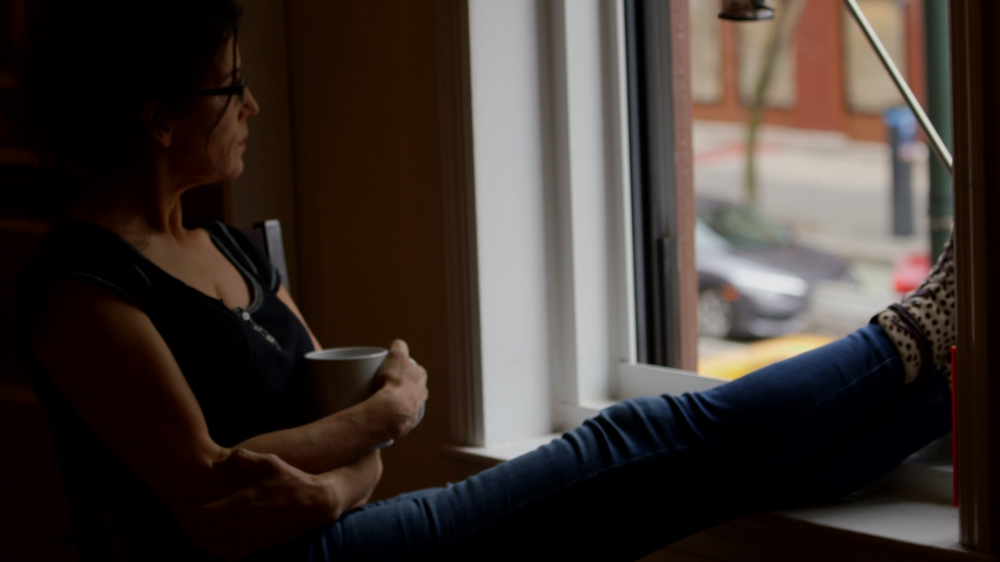

By Reynaldo Leanos Jr
When people die, they are usually either cremated, or buried, but New York-based artist, Heide Hatry, has a unique alternative.
Hatry creates portraits out of the ashes of cremated people. Family members come to her with their loved ones' ashes and Hatry produces a portrait within six weeks in hopes it helps them heal. Now, Hatry is trying to expand her services by going to funeral homes across the country and asking if she can provide her artistic service at their business.
The idea of using ashes for portraits came to her in 2008 when a friend invited her to his home to see his wife who had died.
"I was very curious because I couldn't imagine how he would have been able to show that person to me," said Hatry. "He said, 'here', and there was an urn."
Hatry had never seen the ashes of someone who had been cremated, so she asked if she could look inside.
“I lifted this lid and there were these pieces of bones, quite coarse, and I was also touched by this,” said Hatry. “The idea that this was a human being, I had never seen that before.”
Stephen Prothero wrote "Purified by Fire: A History of remation in America", and said cremation came to the U.S. as a renaissance rather than a revolution, but many North American Indian groups had been practicing cremation for centuries.
Three weeks later, one of Hatry's best friends committed suicide.
The suicide triggered unsolved grieving issues Hatry had been dealing with since the death of her father several years earlier. Hatry said her life fell apart and kept wondering why her friend committed suicide.
"Could I have noticed? What was different? What were our last emails like?" asked Hatry. "I was so angry. We could have figured it out. It was not necessary."
Hatry experimented with various materials before creating a portrait out of her best friend and father's ashes.
It took a while before Hatry mastered the art of using ashes for portraits, but when she finished her best friend and father's portrait, she felt healed.
"When they were done I talked to them and it felt so beautiful that they were there somehow," said Hatry.
Eliabeth Brown felt the same connection Hatry had to the portrait. Brown's daughter died several years ago.
"I cried when I got the portrait of my daughter," said Brown in a testimony on Hatry's website. "It was like she had come home, and every time I look at her I am astonished at how close I feel.
Hatry said she's completed about 40 portraits.
Hatry said she hopes people consider her artwork an option when deciding what to do with loved ones who have died. She compares it to a relic.
"When you have a book and the book is by an author you really love and this author wrote in the book, 'dear Heide this is for you', or whatever this person writes in the book, it means so much more to you than exactly the same book where this is not written in it," said Hatry. "In my portraits it's not just something somebody touched, it actually is that person. It's the person who you loved and there's nothing comparable."